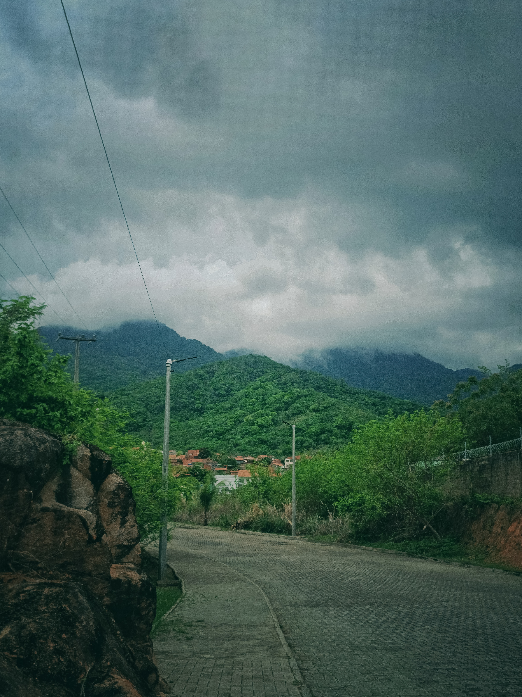
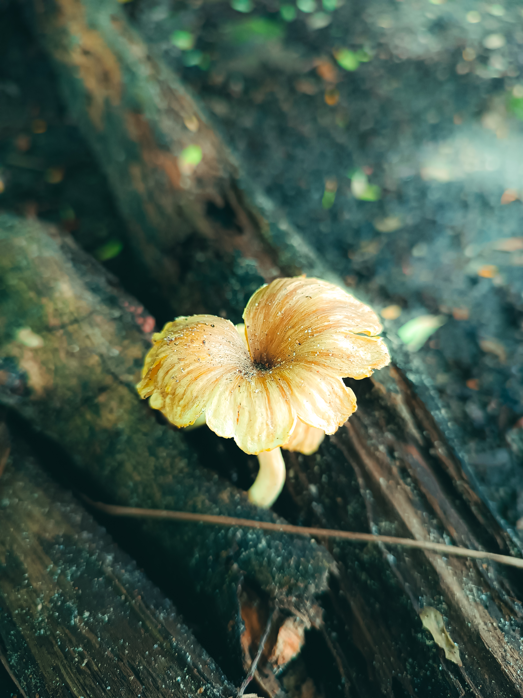
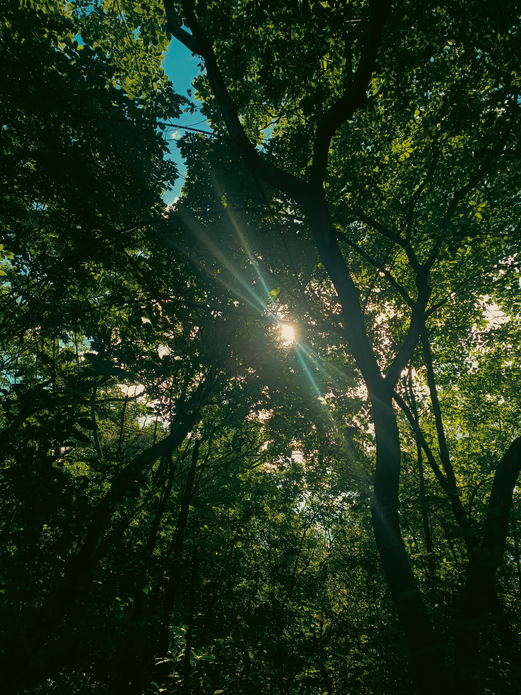

Meu Portifólio
Galeria de Fotos

Figura 1: Fotografia do céu e serras do IFCE Campus Maranguape.

Figura 2: Fotografia de um cogumelo crescendo em toco de árvore.

Figura 3: Fotografia de árvores vistas de cima com raios solares.

Figura 1: Fotografia de flores vermelhas com gotículas de água após chuva.